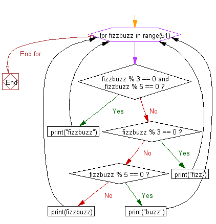

Session 1 Recap#
A quick recap:#
Fundamentals
Data structures: lists and dictionaries
Control flow:
if,elif&elseLoops
Exercise: check your understanding
Fundamentals#
We can instantiate variables, and assign data values to them. Lets create some data for the greatest car in the world, the Citroen Berlingo Mk1.
make = "Citroen"
model = "Berlingo"
color = "blue"
owner = "Simon"
sliding_doors = 2
other_doors = 3
coolness_pc = 95
print(f"My {make} {model} is {coolness_pc}% cool.")
My Citroen Berlingo is 95% cool.
Each variable has a type. We did not have to declare this specifically: Python worked this out based on our data. Some common data types are string, float, and int. We can check the type of a variable using the built-in function, type:
print(type(owner))
<class 'str'>
We can write comments using the # symbol, or using triple quotes. Lines in these sections will not be executed. An example if shown with the # symbol:
new_car_make = "Mercedes"
print(new_car_make)
Mercedes
Lists and dictionaries#
We can hold more than one piece of data in a data structure. We can use create lists using square brackets, as follows:
car_info = [make, model, color, sliding_doors, other_doors]
print(car_info)
print(type(car_info))
['Citroen', 'Berlingo', 'blue', 2, 3]
<class 'list'>
We can access specific elements of a list using the elements index. Remember that indexing starts from 0.
element_2 = car_info[1]
print(element_2)
print(type(element_2))
Berlingo
<class 'str'>
Data structures often have built-in functions, or methods, attached to them. These provide fast ways of achieving common tasks. We can use the .append method to insert an element at the final index plus one, of a list:
cost = 2000
car_info.append(cost)
print(car_info)
['Citroen', 'Berlingo', 'blue', 2, 3, 2000]
We can update a list element, using the element’s index. Remember that a negative index counts from the end of the list, with an index of -1 indicating the final element index.
new_cost = 1850
car_info[-1] = new_cost
print(car_info)
['Citroen', 'Berlingo', 'blue', 2, 3, 1850]
We can make a dictionary using key, values pairs. Dictionaries are useful when we want to return values, based on a value name, and not an index. For example:
car_dict = {
"make": "Citroen",
"model": "Berlingo",
"color": "blue",
"owner": "Simon",
"sliding_doors": 2,
"other_doors": 3,
"coolness_pc": 95
}
print(car_dict)
print(type(car_dict))
{'make': 'Citroen', 'model': 'Berlingo', 'color': 'blue', 'owner': 'Simon', 'sliding_doors': 2, 'other_doors': 3, 'coolness_pc': 95}
<class 'dict'>
We can then access values based on their key. To access the value associated with the coolness percentage key:
print(car_dict["coolness_pc"])
95
We can add data to a dictionary in-place, as it is mutable.
current_price = 1850
car_dict["current_price"] = current_price
print(car_dict)
{'make': 'Citroen', 'model': 'Berlingo', 'color': 'blue', 'owner': 'Simon', 'sliding_doors': 2, 'other_doors': 3, 'coolness_pc': 95, 'current_price': 1850}
Finally, we can access just the keys, just the values, or the key, value pairs of a dictionary, using built-in methods:
car_fields = list(car_dict.keys())
print(car_fields)
['make', 'model', 'color', 'owner', 'sliding_doors', 'other_doors', 'coolness_pc', 'current_price']
Control flow#
We can use if, elif and else statements to perform different tasks, based on data values. For example, imagine if we are trying to sell our car, stored in the car_dict dictionary. Lets say that we will indicate on our inventory system when a buyer has offered more than 90% of the asking price of a car. We will update the boolean flag when we should sell it.
sell_flag = False
asking_price = 1500
current_price = car_dict["current_price"]
if asking_price >= current_price * 0.9:
sell_flag = True
print("You got yourself a deal!")
else:
print("You're taking the mick matey!")
You're taking the mick matey!
Now for an unrealistic example. Lets say a buyer wants a car that is a Berlingo, but has a car to trade in. As a dealer, we are willing to take the car and a lower asking price for the Berlingo if the car is in our desired car list. We can update our system accordingly, using the and and in operators.
sell_flag = False
desired_cars = ["Audi", "Mercedes", "Aston Martin"]
asking_price = 556
trade_in_car = "Audi"
current_price = car_dict["current_price"]
if asking_price >= current_price * 0.9:
sell_flag = True
print("I'm happy with that.")
elif (trade_in_car in desired_cars) and (asking_price >= current_price * 0.3):
sell_flag = True
print("Great to do business with you!")
else:
print("Sorry mate thats the best I can do.")
Great to do business with you!
Loops#
It is often very helpful to perform calculations over a number of items, usually stored in a data structure. If the data structure is iterable, then we can write a for loop to execute operations over each element. For example, lets print out every value in our car_dict dictionary:
for value in car_dict.values():
print(value)
Citroen
Berlingo
blue
Simon
2
3
95
1850
Lets try to multiply every value by 10. Why are some results strange?
for value in car_dict.values():
new_value = value * 10
print(new_value)
CitroenCitroenCitroenCitroenCitroenCitroenCitroenCitroenCitroenCitroen
BerlingoBerlingoBerlingoBerlingoBerlingoBerlingoBerlingoBerlingoBerlingoBerlingo
blueblueblueblueblueblueblueblueblueblue
SimonSimonSimonSimonSimonSimonSimonSimonSimonSimon
20
30
950
18500
When we use an asterisk operator on a string we are overloading it. It is actually concatenating the string 10 times!
Exercise#
This is a famous (and now overused) programming task used in interviews. “Write a program that prints the numbers from 1 to 50. But for multiples of three print “Fizz” instead of the number and for the multiples of five print “Buzz”. For numbers which are multiples of both three and five print “FizzBuzz”.”
Give it a go!
Hint 1#
In Python, the modulo operator is %. This returns the remainder when dividing one number by another.
print(10 % 5)
0
print(10 % 3)
1
Hint 2#
Here is the control flow for the fizzbuzz problem. Note that the iterator variable is not called i in this flowchart (it is called fizzbuzz.)

Solution 1
for i in range(1, 51):
if i % 3 == 0 and i % 5 == 0:
print("fizzbuzz")
elif i % 3 == 0:
print("fizz")
elif i % 5 == 0:
print("buzz")
else:
print(i)
Solution 2
for i in range(1, 51):
s = ''
if not i % 3:
s += 'fizz'
if not i % 5:
s += 'buzz'
if not s:
s = i
print(s)